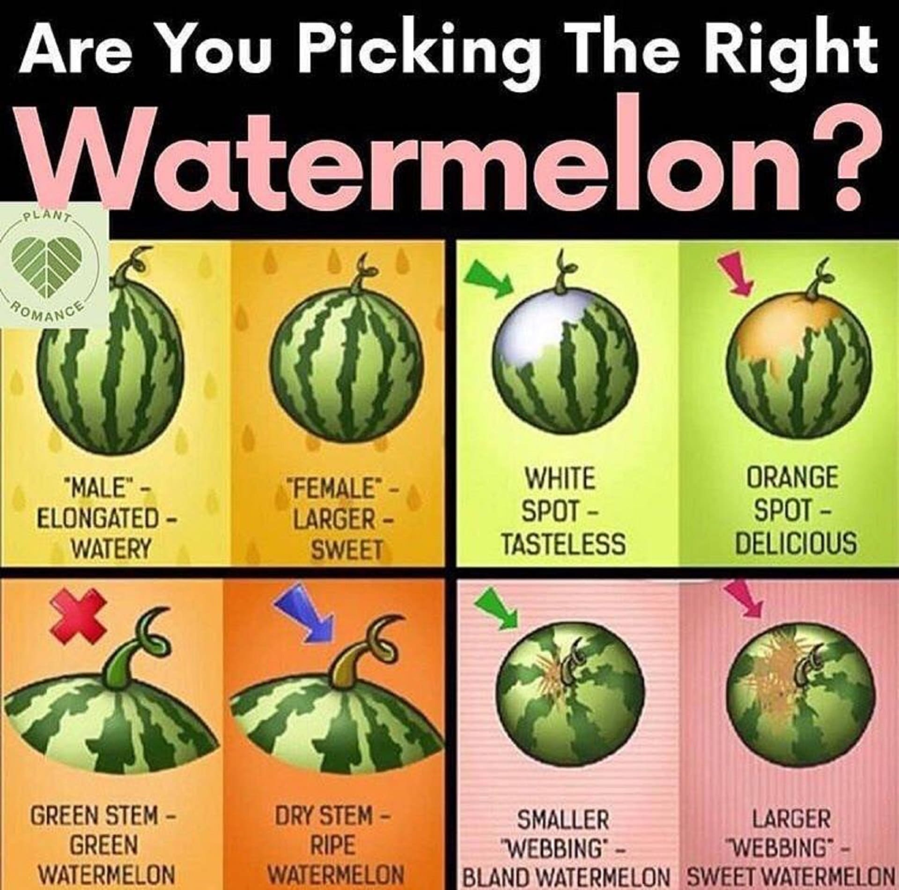

A fruit is a mature, ripened ovary, along with the contents of the ovary
| CATEGORIES OF FRUITS | EXAMPLES |
|---|---|
| Dry Fruits | cashewnuts, almonds, apricots |
| Fleshy Fruits | mango, papaya, plum |
| Aggregate Fruits | pineapple, blackberry, raspberry |
| Geocarpic Fruits | groundnuts |
Fruits and vegetables comprise different parts of the plants from which they grow. Fruits come from the flowering part of a plant and contain seeds. In contrast, vegetables are the edible parts of a plant, such as the leaves, stem, roots, and bulbs
With watermelons you only get one chance to do it right, once they are detached from the vine, watermelons won’t continue to ripen. Here are clues to look out for
